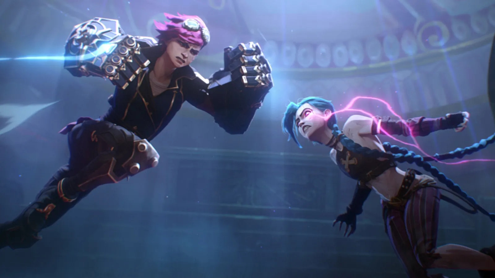
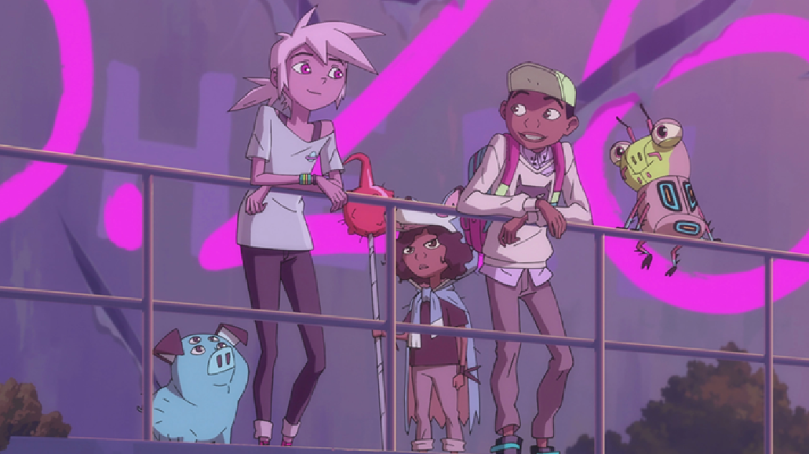
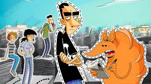
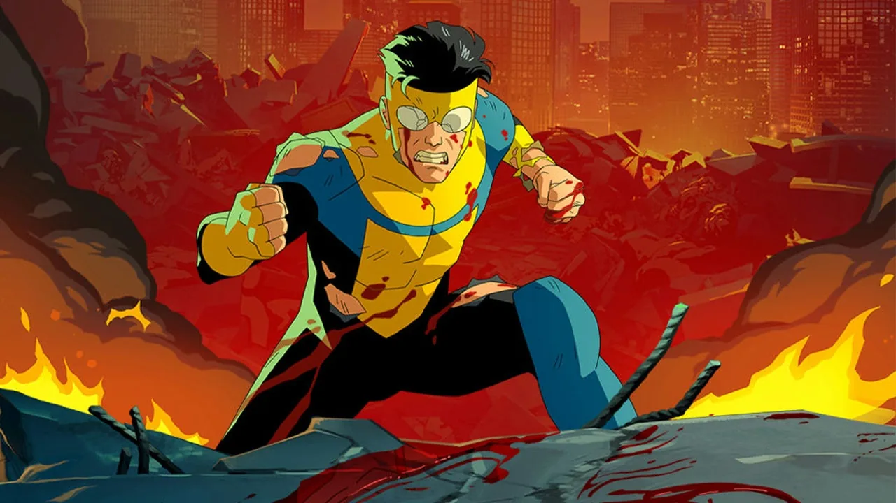

Arcane: muy buena serie que me gusto por sus escenas de accion, la construccion del mundo y su historia
Imagen

Kipo: serie post-apocaliptica con animales mutantes y lindo estilo
Imagen

Cortar por la linea de puntos: una comedia/satira con un muy buen plot
Imagen

invincible: alta serie de accion no apta para sencibles pero con buen desrrollo de personajes
Imagen
